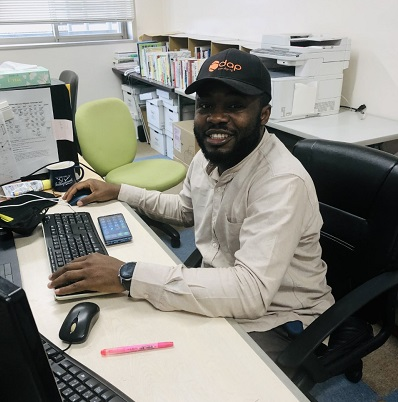
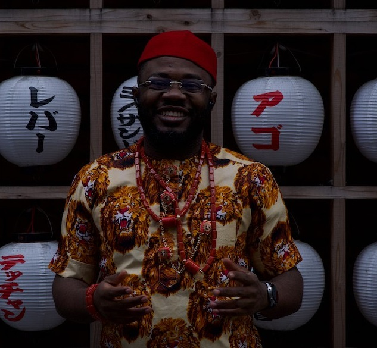
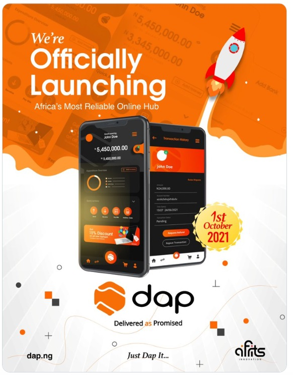

mizukan
イベント
留学生紹介
2021年7月15日，ナイジェリアからの留学生
オパラ・ジョンポール・ンナンディ（通称:ＪＰ)が
来日し，水工学研究室に加わりました(^o^)／

趣味は，プログラミング，旅行，音楽鑑賞など.
好きなアーティストは，ジャマイカのラッパーSean Paul
Jポップではヒゲダンの「Pretender」がお気に入りです.

また，ビジネスを構築することが大好きで，
夢は，アフリカに貢献する慈善家になることです.

ナイジェリアの仲間と開発した電子決済サービス【DAP】
ナイジェリアの公用語は英語なので，流暢な英語を話します.
日本語も猛勉強中ですので，気軽に声をかけてください！！
文責 麓